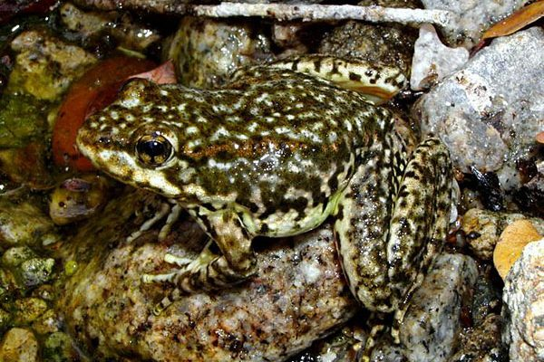
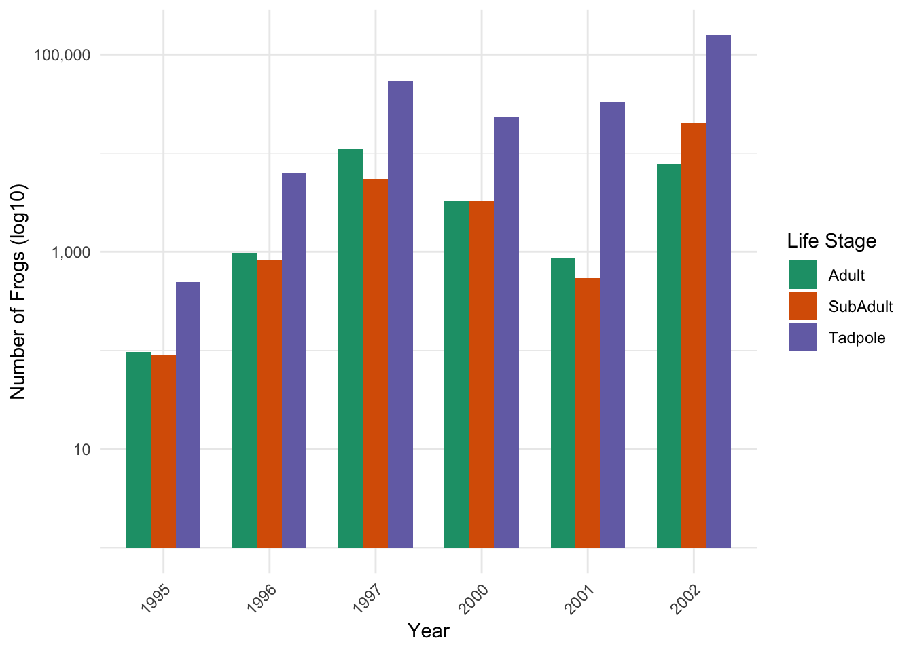
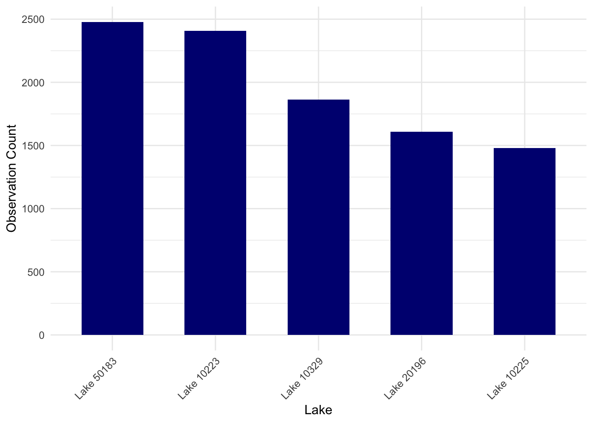
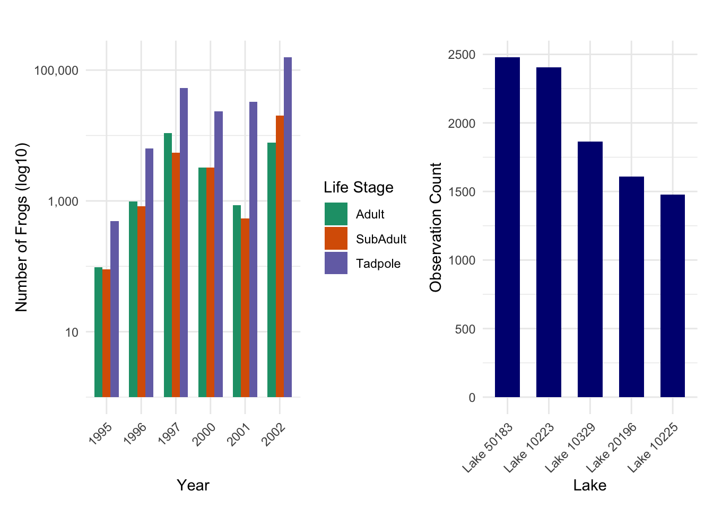

Code
library(tidyverse)
library(here)
library(patchwork)
library(cowplot)
library(ggplot2)
library(dplyr)Natalie Smith
January 28, 2024
This analysis focuses on Mountain Yellow-legged frogs (Rana muscosa) in the southern Sierra Nevada region, utilizing data from the Sierra Lakes Inventory Project. The study aims to understand population dynamics and distribution patterns of these amphibians from 1995 to 2002.

Data cleaning and wrangling involved several steps: first, excluding the “Egg Mass” life stage; then, removing any unnecessary data. Additionally, the date format was converted from character to the standard date format. Finally, the dataset was sorted by amphibian life stage and summarized.
#Clean and wrangle data
ramu_only <- sierra_amph_og %>%
filter(amphibian_species == "RAMU", amphibian_life_stage != "EggMass") %>% select(lake_id,survey_date, amphibian_species, amphibian_life_stage, amphibian_number) %>% mutate(survey_date =lubridate::mdy(survey_date),
year = year(survey_date))
ramu_only$year <- factor(ramu_only$year)
#Sort by amphibian life stage and summarize
ramu_counts <- ramu_only %>%
group_by(year, amphibian_life_stage) %>%
summarize(amphibian_number= sum(amphibian_number, na.rm = TRUE)) %>%
ungroup()#| label: fig-counts-by-life-stage
#| fig-cap: "Yellow-legged frog counts by life stage (adult, subadult, tadpole) from 1995-2002, displayed on a log10 scale for clarity. Subadults and tadpoles reached their highest counts in 2002, while adults peaked in 1997."
life_stage_bar <- ggplot(ramu_counts, aes(x = year, y = amphibian_number, fill = amphibian_life_stage)) +
geom_bar(stat = 'identity', position = 'dodge', width = 0.7) +
labs(x = "Year",
y = "Number of Frogs (log10)",
fill = "Life Stage") +
scale_fill_brewer(palette = "Dark2") +
scale_y_log10(labels = scales::comma) +
theme_minimal() +
theme(axis.text.x = element_text(angle = 45, hjust = 1),
legend.position = "right")
life_stage_bar
The dataset underwent further filtering to focus solely on the adult and subadult life stages, while lake IDs were adjusted for improved clarity. Subsequently, a new data frame was generated to display observations of adult and subadult Mountain Yellow-legged frogs (Rana muscosa) in the five lakes with the highest overall counts.
ramu_combined <- sierra_amph_og %>%
filter(amphibian_species == "RAMU", amphibian_life_stage %in% c("Adult", "SubAdult")) %>%
select(lake_id, survey_date, amphibian_species, amphibian_life_stage, amphibian_number) %>%
mutate(
survey_date = lubridate::mdy(survey_date),
year = lubridate::year(survey_date),
lake_label = paste0("Lake ", lake_id))#| label: top-five
#| fig-cap: ""Figure 2: Top 5 lakes with observations of Mountain Yellow-Legged Frogs: Lake 50183 (19 observations), Lake 70583 (12 observations), Lake 10226, 41322, and 50219 (all with 11 observations)"
top_5_graph <- ggplot(ramu_counts_top_5, aes(x = reorder(lake_label, -amphibian_number), y = amphibian_number)) +
geom_col(fill = "navyblue", width = 0.6) +
labs(x = "Lake",
y = "Observation Count") +
theme_minimal() +
theme(axis.text.x = element_text(angle = 45, hjust = 1))
top_5_graph
#| label: combined-plot
#| fig-cap: "Figure 3: Analysis of Mountain Yellow-Legged Frogs (Rana muscosa) by Life Stage and Year. The left graph, displayed on a log10 scale for clarity, illustrates total counts each year across water bodies, categorized by life stage (adult, subadult, tadpole). On the right, combined counts of adult and subadult frogs in the 5 lakes with the highest totals."
plot1 <- life_stage_bar +
ggtitle(" ")
plot2 <- top_5_graph +
ggtitle(" ")
combined_plots <- plot1 + plot2
combined_plots
Reference:
Knapp, R.A., C. Pavelka, E.E. Hegeman, and T.C. Smith. 2020. The Sierra Lakes Inventory Project: Non-Native fish and community composition of lakes and ponds in the Sierra Nevada, California ver 2. Environmental Data Initiative. https://doi.org/10.6073/pasta/d835832d7fd00d9e4466e44eea87fab3